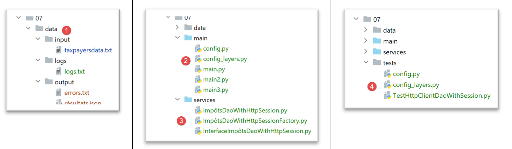
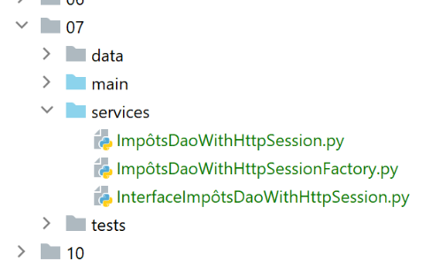

31. 第 12 版 jSON 和 XML 服务的 Web 客户端
我们将为刚刚编写好的Web服务器上的jSON和XML服务编写三个控制台客户端应用程序。我们将沿用第11版的客户端/服务器架构：

我们将编写三个控制台脚本：
- 脚本 [main] 和 [main3] 将使用服务器的 [métier] 层；
- 脚本 [main2] 将使用客户端的 [métier] 层；
31.1. 客户端脚本的目录结构
[http-clients/07]文件最初是通过复制[http-clients/06]文件获得的。随后该文件被修改。

- 更名为 [1]：客户端处理或创建的数据；
- 生成 [2]，即客户的配置和控制台脚本；
- [3]，即客户的 [dao] 层；
- 在 [4] 中，客户端 [dao] 层的测试文件夹；
31.2. 客户层的 [dao]


31.2.1. 接口
[dao] 层将实现以下 [InterfaceImpôtsDaoWithHttpSession] 接口：
from abc import abstractmethod
from AbstractImpôtsDao import AbstractImpôtsDao
from AdminData import AdminData
from TaxPayer import TaxPayer
class InterfaceImpôtsDaoWithHttpSession(AbstractImpôtsDao):
# 计算每单位税额
@abstractmethod
def calculate_tax(self, taxpayer: TaxPayer):
pass
# 按批次计算税款
@abstractmethod
def calculate_tax_in_bulk_mode(self, taxpayers: list):
pass
# 初始化会话
@abstractmethod
def init_session(self, type_session: str):
pass
# 结束会话
@abstractmethod
def end_session(self):
pass
# 身份验证
@abstractmethod
def authenticate_user(self, user: str, password: str):
pass
# 模拟列表
@abstractmethod
def get_simulations(self) -> list:
pass
# 删除模拟
@abstractmethod
def delete_simulation(self, id: int) -> list:
pass
# 获取用于计算税款的数据
@abstractmethod
def get_admindata(self) -> AdminData:
pass
接口中的每个方法都对应于税费计算服务器的 URL 服务。
- 第 7 行：该接口继承了管理文件系统访问的 [AbstractDao] 类；
方法与服务 URL 之间的映射在配置文件 [config] 中完成：
# 税款计算服务器
"server": {
"urlServer": "http://127.0.0.1:5000",
"user": {
"login": "admin",
"password": "admin"
},
"url_services": {
"calculate-tax": "/calculer-impot",
"get-admindata": "/get-admindata",
"calculate-tax-in-bulk-mode": "/calculer-impots",
"init-session": "/init-session",
"end-session": "/fin-session",
"authenticate-user": "/authentifier-utilisateur",
"get-simulations": "/lister-simulations",
"delete-simulation": "/supprimer-simulation"
}
31.2.2. 实现
接口 [InterfaceImpôtsDaoWithHttpSession] 由以下类 [ImpôtsDaoWithHttpSession] 实现：
# 导入
import json
import requests
import xmltodict
from flask_api import status
from AbstractImpôtsDao import AbstractImpôtsDao
from AdminData import AdminData
from ImpôtsError import ImpôtsError
from InterfaceImpôtsDaoWithHttpSession import InterfaceImpôtsDaoWithHttpSession
from TaxPayer import TaxPayer
class ImpôtsDaoWithHttpSession(InterfaceImpôtsDaoWithHttpSession):
# 构建器
def __init__(self, config: dict):
# 父级初始化
AbstractImpôtsDao.__init__(self, config)
# 保存配置项
# 通用配置
self.__config = config
# 服务器
self.__config_server = config["server"]
# 服务
self.__config_services = config["server"]['url_services']
# 调试模式
self.__debug = config["debug"]
# 日志记录器
self.__logger = None
# Cookie
self.__cookies = None
# 会话类型（json、xml）
self.__session_type = None
# 请求/响应阶段
def get_response(self, method: str, url_service: str, data_value: dict = None, json_value=None):
# [method]：方法 HTTP GET 或 POST
# [url_service]：服务 URL
# [data]：POST的x-www-form-urlencoded参数
# [json]：POST的参数（JSON格式）
# [cookies]：请求中需包含的cookie
# 必须拥有 XML 或 JSON 会话，否则无法处理响应
if self.__session_type not in ['json', 'xml']:
raise ImpôtsError(73, "il n'y a pas de session valide en cours")
# 登录
if method == "GET":
# GET
response = requests.get(url_service, cookies=self.__cookies)
else:
# POST
response = requests.post(url_service, data=data_value, json=json_value, cookies=self.__cookies)
# 调试模式？
if self.__debug:
# 日志记录器
if not self.__logger:
self.__logger = self.__config['logger']
# 正在登录
self.__logger.write(f"{response.text}\n")
# 结果
if self.__session_type == "json":
résultat = json.loads(response.text)
else: # xml
résultat = xmltodict.parse(response.text[39:])['root']
# 如果响应中包含 Cookie，则获取它们
if response.cookies:
self.__cookies = response.cookies
# 状态码
status_code = response.status_code
# 如果状态码不为 200，则调用 OK
if status_code != status.HTTP_200_OK:
raise ImpôtsError(35, résultat['réponse'])
# 返回结果
return résultat['réponse']
def init_session(self, session_type: str):
# 记录会话类型
self.__session_type = session_type
# 服务URL
config_server = self.__config_server
url_service = f"{config_server['urlServer']}{self.__config_services['init-session']}/{session_type}"
# 执行请求
self.get_response("GET", url_service)
…
- 第 16-34 行：类的构造函数；
- 第 19 行：初始化父类；
- 第 21-28 行：存储某些配置数据；
- 第 29-34 行：创建三个在类方法中使用的属性；
- 第36-82行：方法[get_response]将[dao]层所有方法的公共部分进行提取： 发送 HTTP 请求并从服务器获取 HTTP 响应；
- 第 38-42 行：定义 [get_response] 方法的 5 个参数；
- 第 42 行：需要注意的是，由于服务器保持会话，客户端需要读取/发送 Cookie；
- 第44-46行：验证当前是否存在有效的会话；
- 第51行：处理GET的情况。返回接收到的cookie；
- 第54行：处理POST的情况。该参数可能有两种类型：
- 类型为 [x-www-form-urlencoded]。URL、[/calculer-impot] 和 [/authentifier-utilisateur] 均属于此类。 此时使用方法接收到的参数 [data_value]；
- 类型为 [json]。例如 URL 和 [/calculer-impots]。此时使用该方法接收的参数 [json_value]；
在此处，会话cookie也会被返回。
- 第 56-62 行：若处于 [debug] 模式，则会记录服务器的响应。该日志非常重要，因为它能准确显示服务器返回的内容；
- 第 64-68 行：根据当前是 JSON 模式还是 XML 模式，将服务器的文本响应转换为字典。以 URL [/init-session] 为例：
响应 jSON 如下：
2020-08-03 11:45:21.218116, MainThread : {"action": "init-session", "état": 700, "réponse": ["session démarrée avec le type de réponse json"]}
响应 XML 如下：
2020-08-03 11:45:54.671871, MainThread : <?xml version="1.0" encoding="utf-8"?>
<root><action>init-session</action><état>700</état><réponse>session démarrée avec le type de réponse xml</réponse></root>
第64-68行的代码确保在两种情况下，[résultat]中都会得到一个包含键[action, état, réponse]的字典；
- 第70-72行：如果响应中包含Cookie，则将其获取。下次请求时需将这些Cookie一并发送；
- 第74-79行：如果响应状态HTTP不为200，则抛出异常，并包含result[’réponse’]中的错误消息。这可能是一个错误或一组错误；
- 第 81-82 行：将服务器的响应返回给调用方；
[init_session]
- 第 84 行：方法 [init_session] 用于设定客户端希望与服务器建立的 json 或 xml 会话类型；
- 第86行：在类中记录所需的会话类型。实际上，所有方法都需要此信息才能正确解码服务器的响应；
- 第88-90行：根据应用程序配置，确定需要查询的服务URL；
- 第 93 行：调用 URL 服务。不获取 [get_response] 方法的结果：
- 若该方法抛出异常，则操作失败。此处不处理该异常，异常将直接上报至调用方代码，调用方随后将通过错误消息终止客户端；
- 如果未抛出异常，则说明会话初始化成功；
[authenticate_user]
def authenticate_user(self, user: str, password: str):
# 服务网址
config_server = self.__config_server
url_service = f"{config_server['urlServer']}{self.__config_services['authenticate-user']}"
post_params = {
"user": user,
"password": password
}
# 请求执行
self.get_response("POST", url_service, post_params)
- 方法 [authenticate_user] 用于向服务器进行身份验证。为此，它在第 1 行接收登录凭据 [user, password]；
- 第2-4行：确定要查询的服务URL；
- 第5-8行： 设置 POST 的参数，因为 URL [/authentifier-utilisateur] 正在等待一个带有 [user, password] 参数的 POST；
- 第11行：请求已执行。此处同样无法获取服务器的响应。是否成功由[get_response]抛出的异常决定；
[calculate_tax]
def calculate_tax(self, taxpayer: TaxPayer):
# 服务 URL
config_server = self.__config_server
url_service = f"{config_server['urlServer']}{self.__config_services['calculate-tax']}"
# POST 的参数
post_params = {
"marié": taxpayer.marié,
"enfants": taxpayer.enfants,
"salaire": taxpayer.salaire
}
# 请求执行
response = self.get_response("POST", url_service, post_params)
# 使用响应更新 TaxPayer
taxpayer.fromdict(response)
- 方法 [calculate_tax] 用于计算作为参数传入的纳税人 [taxpayer] 的税款。该参数由该方法修改（第 15 行），因此即为该方法的返回结果；
- 第2-4行：定义待查询的服务URL；
- 第6-10行：定义待发送的POST参数。 实际上，服务 [/calculer-impot] 所调用的 URL 服务，期待接收带有参数 [marié, enfants, salaire] 的 POST 响应；
- 第12-13行：执行请求并获取服务器响应。服务[/calculer-impot]的URL返回了一个包含税种键[impôt, décôte, surcôte, réduction, taux]的字典；
- 第15行：使用获取的字典[response]更新纳税人[taxpayer]；
[calculate_tax_in_bulk_mode]
# 批量模式下计算税款
def calculate_tax_in_bulk_mode(self, taxpayers: list):
# 允许异常上报
# 将纳税人转换为字典列表
# 仅保留属性[marié, enfants, salaire]
list_dict_taxpayers = list(
map(lambda taxpayer:
taxpayer.asdict(included_keys=[
'_TaxPayer__marié',
'_TaxPayer__enfants',
'_TaxPayer__salaire']),
taxpayers))
# 服务网址
config_server = self.__config_server
url_service = f"{config_server['urlServer']}{self.__config_services['calculate-tax-in-bulk-mode']}"
# 执行请求
list_dict_taxpayers2 = self.get_response("POST", url_service, data_value=None, json_value=list_dict_taxpayers)
# 当只有一名纳税人且处于 XML 会话中时，[list_dict_taxpayers2] 不是列表
# 在此情况下将其转换为列表
if not isinstance(list_dict_taxpayers2, list):
list_dict_taxpayers2 = [list_dict_taxpayers2]
# 用接收到的结果更新初始纳税人列表
for i in range(len(taxpayers)):
# 更新纳税人列表[i]
taxpayers[i].fromdict(list_dict_taxpayers2[i])
# 此处参数 [taxpayers] 已根据服务器结果进行更新
- 第2行：该方法接收一个类型为TaxPayer的纳税人列表；
- 第7-13行：将该[TaxPayer]类型的元素列表转换为[marié, enfants, salaire]类型的字典列表；
- 第15-17行：设置服务URL；
- 第19-20行：执行POST请求，其请求体jSON由第7行创建的字典列表组成。获取服务器的响应；
- 第23-24行：测试表明，当会话类型为XML时会出现问题：
- 如果初始纳税人列表包含 N 个元素（N>1），则结果为包含 N 个类型为 [OrderedDict] 的字典的列表；
- 如果初始列表仅包含一个元素，则返回的不是列表，而是一个类型为 [OrderedDict] 的元素；
- 第23-24行：若属于后一种情况（1个元素），则将结果转换为包含1个元素的列表；
- 第25-28行：该接收到的字典列表包含初始列表中每位纳税人的税额。随后，将每个字典更新为接收到的结果；
[get_simulations]
def get_simulations(self) -> list:
# 服务网址
config_server = self.__config_server
url_service = f"{config_server['urlServer']}{self.__config_services['get-simulations']}"
# 执行请求
return self.get_response("GET", url_service)
- 第1行：该方法请求当前会话中已执行的模拟列表；
- 第2行：该方法返回服务器的响应；
[delete_simulation]
def delete_simulation(self, id: int) -> list:
# 服务网址
config_server = self.__config_server
url_service = f"{config_server['urlServer']}{self.__config_services['delete-simulation']}/{id}"
# 请求执行
return self.get_response("GET", url_service)
- 第 1 行：该方法删除传入标识符对应的模拟；
- 第7行：该方法返回服务器的响应，即在执行删除操作后剩余的模拟列表；
[get-admindata]
def get_admindata(self) -> AdminData:
# 允许异常上报
# 服务网址
config_server = self.__config_server
url_service = f"{config_server['urlServer']}{self.__config_services['get-admindata']}"
# 执行请求
résultat = self.get_response("GET", url_service)
# 结果是一个字符串类型的字典（若为 XML 会话）
if self.__session_type == 'xml':
# 新字典
résultat2 = {}
# 将所有内容转换为数字
for key, value in résultat.items():
# 字典中的某些元素是列表
if isinstance(value, list):
values = []
for value2 in value:
values.append(float(value2))
résultat2[key] = values
else:
# 其他为简单元素
résultat2[key] = float(value)
else:
résultat2 = résultat
# 结果类型为 AdminData
return AdminData().fromdict(résultat2)
- 第 1 行：该方法向服务器请求用于计算税款的税务常量；
- 第29行：该方法返回类型[AdminData]；
- 第 9 行：以字典形式获取服务器的响应。测试表明，当会话为 XML 时会出现问题：字典中的值不是数值，而是字符串。 我们在研究 [xmltodict] 模块时曾报告过此问题，并确认这是正常行为。[xmltodict] 在接收的 XML 数据流中不包含类型信息。 话虽如此，在此特定情况下，必须将接收到的字典中所有值转换为数字。该字典包含三个 [limites, coeffr, coeffn] 列表和一组数字属性；
- 第 13-25 行：基于字符串类型的字典 [résultat]，创建一个数值类型的字典 [résultat2]；
- 第29行：使用字典[resultat2]初始化类型[AdminData]；
31.2.3. [dao] 层的工厂
我们的客户端将采用多线程模式。由于 [dao] 层是由一个具有读写状态（即读写属性）的类实现的，因此每个线程必须拥有自己的 [dao] 层，否则就需要对线程间共享数据的访问进行同步。 在此我们采用第一种方案。我们使用一个 [ImpôtsDaoWithHttpSessionFactory] 类，该类能够创建 [dao] 层的实例：
from ImpôtsDaoWithHttpSession import ImpôtsDaoWithHttpSession
class ImpôtsDaoWithHttpSessionFactory:
def __init__(self, config: dict):
# 保存参数
self.__config = config
def new_instance(self):
# 返回 [dao] 层的实例
return ImpôtsDaoWithHttpSession(self.__config)
31.3. 客户端配置

客户端由文件 [config] 和 [config_layers] 进行配置。文件 [config] 内容如下：
def configure(config: dict) -> dict:
import os
# 步骤 1 ------
# 该文件的文件夹
script_dir = os.path.dirname(os.path.abspath(__file__))
# 根路径
root_dir = "C:/Data/st-2020/dev/python/cours-2020/python3-flask-2020"
# 绝对依赖项
absolute_dependencies = [
# 项目文件夹
# BaseEntity, MyException
f"{root_dir}/classes/02/entities",
# InterfaceImpôtsDao, InterfaceImpôtsMétier, InterfaceImpôtsUi
f"{root_dir}/impots/v04/interfaces",
# AbstractImpôtsdao, ImpôtsConsole, ImpôtsMétier
f"{root_dir}/impots/v04/services",
# ImpotsDaoWithAdminDataInDatabase
f"{root_dir}/impots/v05/services",
# AdminData, ImpôtsError, TaxPayer
f"{root_dir}/impots/v04/entities",
# 常量、区间
f"{root_dir}/impots/v05/entities",
# ImpôtsDaoWithHttpSession, ImpôtsDaoWithHttpSessionFactory, InterfaceImpôtsDaoWithHttpSession
f"{script_dir}/../services",
# 配置脚本
script_dir,
# 日志记录器
f"{root_dir}/impots/http-servers/02/utilities",
]
# 设置系统路径
from myutils import set_syspath
set_syspath(absolute_dependencies)
# 步骤 2 ------
# 使用常量配置应用程序
config.update({
# 纳税人文件
"taxpayersFilename": f"{script_dir}/../data/input/taxpayersdata.txt",
# 结果文件
"resultsFilename": f"{script_dir}/../data/output/résultats.json",
# 错误文件
"errorsFilename": f"{script_dir}/../data/output/errors.txt",
# 日志文件
"logsFilename": f"{script_dir}/../data/logs/logs.txt",
# 税款计算服务器
"server": {
"urlServer": "http://127.0.0.1:5000",
"user": {
"login": "admin",
"password": "admin"
},
"url_services": {
"calculate-tax": "/calculer-impot",
"get-admindata": "/get-admindata",
"calculate-tax-in-bulk-mode": "/calculer-impots",
"init-session": "/init-session",
"end-session": "/fin-session",
"authenticate-user": "/authentifier-utilisateur",
"get-simulations": "/lister-simulations",
"delete-simulation": "/supprimer-simulation"
}
},
# 调试模式
"debug": True
}
)
# 步骤 3------
# 实例化层
import config_layers
config['layers'] = config_layers.configure(config)
# 加载配置
return config
文件 [config_layers] 内容如下：
def configure(config: dict) -> dict:
# 应用程序层的实例化
# [métier] 层
from ImpôtsMétier import ImpôtsMétier
métier = ImpôtsMétier()
# DAO 层的工厂
from ImpôtsDaoWithHttpSessionFactory import ImpôtsDaoWithHttpSessionFactory
dao_factory = ImpôtsDaoWithHttpSessionFactory(config)
# 返回层配置
return {
"dao_factory": dao_factory,
"métier": métier
}
- 客户端无法直接访问 [dao] 层。若要访问该层，必须通过 [dao] 层的工厂；
31.4. [main] 客户端

客户端 [main] 用于测试 URL 和 [/init-session, /authentifier-utilisateur, /calculer-impots, /fin-session]：
# 等待 json 或 xml 参数
import sys
syntaxe = f"{sys.argv[0]} json / xml"
erreur = len(sys.argv) != 2
if not erreur:
session_type = sys.argv[1].lower()
erreur = session_type != "json" and session_type != "xml"
if erreur:
print(f"syntaxe : {syntaxe}")
sys.exit()
# 正在配置应用程序
import config
config = config.configure({"session_type": session_type})
# 依赖项
from ImpôtsError import ImpôtsError
import random
import sys
import threading
from Logger import Logger
# 在单线程中执行 [dao] 层
# taxpayers 是一个纳税人列表
def thread_function(config: dict, taxpayers: list):
# 获取 [dao] 层的工厂
dao_factory = config['layers']['dao_factory']
# 创建 [dao] 层的实例
dao = dao_factory.new_instance()
# 会话类型
session_type = config['session_type']
# 纳税人数量
nb_taxpayers = len(taxpayers)
# 日志
logger.write(f"début du calcul de l'impôt des {nb_taxpayers} contribuables\n")
# 初始化会话
dao.init_session(session_type)
# 进行身份验证
dao.authenticate_user(config['server']['user']['login'], config['server']['user']['password'])
# 计算纳税人的税款
dao.calculate_tax_in_bulk_mode(taxpayers)
# 会话结束
dao.end_session()
# 日志
logger.write(f"fin du calcul de l'impôt des {nb_taxpayers} contribuables\n")
# 客户端线程列表
threads = []
logger = None
# 代码
try:
# 日志记录器
logger = Logger(config["logsFilename"])
# 将其保存在配置中
config["logger"] = logger
# 开始日志
logger.write("début du calcul de l'impôt des contribuables\n")
# 获取 [dao] 层的工厂
dao_factory = config["layers"]["dao_factory"]
# 创建 [dao] 层的实例
dao = dao_factory.new_instance()
# 读取纳税人数据
taxpayers = dao.get_taxpayers_data()["taxpayers"]
# 纳税人？
if not taxpayers:
raise ImpôtsError(36, f"Pas de contribuables valides dans le fichier {config['taxpayersFilename']}")
# 使用多个线程计算纳税人的税款
i = 0
l_taxpayers = len(taxpayers)
while i < len(taxpayers):
# 每个线程将处理 1 至 4 名纳税人
nb_taxpayers = min(l_taxpayers - i, random.randint(1, 4))
# 该线程处理过的纳税人列表
thread_taxpayers = taxpayers[slice(i, i + nb_taxpayers)]
# 将 i 递增以处理下一个线程
i += nb_taxpayers
# 创建线程
thread = threading.Thread(target=thread_function, args=(config, thread_taxpayers))
# 将其添加到主脚本的线程列表中
threads.append(thread)
# 启动线程——此操作为异步操作——不等待线程的结果
thread.start()
# 主线程等待其启动的所有线程结束
for thread in threads:
thread.join()
# 此时所有线程均已完成工作——每个线程都修改了一个或多个对象 [taxpayer]
# 将结果保存到文件中 jSON
dao.write_taxpayers_results(taxpayers)
# 结束
except BaseException as erreur:
# 显示错误
print(f"L'erreur suivante s'est produite : {erreur}")
finally:
# 关闭日志记录器
if logger:
# 结束日志
logger.write("fin du calcul de l'impôt des contribuables\n")
# 关闭日志记录器
logger.close()
# 已完成
print("Travail terminé...")
# 结束因错误而中断时可能仍存在的线程
sys.exit()
- 第4-11行：客户端等待一个参数，该参数指定与服务器通信时应使用的会话类型（json或xml）；
- 第 13-15 行：客户端配置完成；
- 第48-104行：该代码已知，曾多次使用。它将需要计算税款的纳税人分配到多个线程中；
- 第26行：方法[thread_function]是每个线程执行的方法，用于计算分配给该线程的纳税人的税款；
- 第27-30行：每个线程都有自己的[dao]层；
- 税款计算分为四个步骤：
- 第 37-38 行：与服务器初始化会话（JSON 或 XML）；
- 第39-40行：向服务器进行身份验证；
- 第41-42行：计算税款；
- 第43-44行：关闭与服务器的会话；
当以 [json] 模式执行此代码时，将获得以下日志：
2020-08-03 14:28:34.320751, MainThread : début du calcul de l'impôt des contribuables
2020-08-03 14:28:34.328749, Thread-1 : début du calcul de l'impôt des 4 contribuables
2020-08-03 14:28:34.328749, Thread-2 : début du calcul de l'impôt des 4 contribuables
2020-08-03 14:28:34.333592, Thread-3 : début du calcul de l'impôt des 3 contribuables
2020-08-03 14:28:34.368651, Thread-2 : {"action": "init-session", "état": 700, "réponse": ["session démarrée avec le type de réponse json"]}
2020-08-03 14:28:34.375699, Thread-1 : {"action": "init-session", "état": 700, "réponse": ["session démarrée avec le type de réponse json"]}
2020-08-03 14:28:34.377432, Thread-3 : {"action": "init-session", "état": 700, "réponse": ["session démarrée avec le type de réponse json"]}
2020-08-03 14:28:34.385653, Thread-2 : {"action": "authentifier-utilisateur", "état": 200, "réponse": "Authentification réussie"}
2020-08-03 14:28:34.392656, Thread-1 : {"action": "authentifier-utilisateur", "état": 200, "réponse": "Authentification réussie"}
2020-08-03 14:28:34.396377, Thread-3 : {"action": "authentifier-utilisateur", "état": 200, "réponse": "Authentification réussie"}
2020-08-03 14:28:34.406528, Thread-2 : {"action": "calculer-impots", "état": 1500, "réponse": [{"marié": "non", "enfants": 3, "salaire": 100000, "impôt": 16782, "surcôte": 7176, "taux": 0.41, "décôte": 0, "réduction": 0, "id": 1}, {"marié": "oui", "enfants": 3, "salaire": 100000, "impôt": 9200, "surcôte": 2180, "taux": 0.3, "décôte": 0, "réduction": 0, "id": 2}, {"marié": "oui", "enfants": 5, "salaire": 100000, "impôt": 4230, "surcôte": 0, "taux": 0.14, "décôte": 0, "réduction": 0, "id": 3}, {"marié": "non", "enfants": 0, "salaire": 100000, "impôt": 22986, "surcôte": 0, "taux": 0.41, "décôte": 0, "réduction": 0, "id": 4}]}
2020-08-03 14:28:34.413837, Thread-1 : {"action": "calculer-impots", "état": 1500, "réponse": [{"marié": "oui", "enfants": 2, "salaire": 55555, "impôt": 2814, "surcôte": 0, "taux": 0.14, "décôte": 0, "réduction": 0, "id": 1}, {"marié": "oui", "enfants": 2, "salaire": 50000, "impôt": 1384, "surcôte": 0, "taux": 0.14, "décôte": 384, "réduction": 347, "id": 2}, {"marié": "oui", "enfants": 3, "salaire": 50000, "impôt": 0, "surcôte": 0, "taux": 0.14, "décôte": 720, "réduction": 0, "id": 3}, {"marié": "non", "enfants": 2, "salaire": 100000, "impôt": 19884, "surcôte": 4480, "taux": 0.41, "décôte": 0, "réduction": 0, "id": 4}]}
2020-08-03 14:28:34.416695, Thread-3 : {"action": "calculer-impots", "état": 1500, "réponse": [{"marié": "oui", "enfants": 2, "salaire": 30000, "impôt": 0, "surcôte": 0, "taux": 0.0, "décôte": 0, "réduction": 0, "id": 1}, {"marié": "non", "enfants": 0, "salaire": 200000, "impôt": 64210, "surcôte": 7498, "taux": 0.45, "décôte": 0, "réduction": 0, "id": 2}, {"marié": "oui", "enfants": 3, "salaire": 200000, "impôt": 42842, "surcôte": 17283, "taux": 0.41, "décôte": 0, "réduction": 0, "id": 3}]}
2020-08-03 14:28:34.425747, Thread-2 : {"action": "fin-session", "état": 400, "réponse": "session réinitialisée"}
2020-08-03 14:28:34.425747, Thread-2 : fin du calcul de l'impôt des 4 contribuables
2020-08-03 14:28:34.428956, Thread-1 : {"action": "fin-session", "état": 400, "réponse": "session réinitialisée"}
2020-08-03 14:28:34.428956, Thread-1 : fin du calcul de l'impôt des 4 contribuables
2020-08-03 14:28:34.428956, Thread-3 : {"action": "fin-session", "état": 400, "réponse": "session réinitialisée"}
2020-08-03 14:28:34.428956, Thread-3 : fin du calcul de l'impôt des 3 contribuables
2020-08-03 14:28:34.428956, MainThread : fin du calcul de l'impôt des contribuables
上文展示了线程 [Thread-2] 的执行流程。
若在 XML 模式下执行 [main]，日志如下：
2020-08-03 14:32:48.495316, MainThread : début du calcul de l'impôt des contribuables
2020-08-03 14:32:48.496452, Thread-1 : début du calcul de l'impôt des 2 contribuables
2020-08-03 14:32:48.498992, Thread-2 : début du calcul de l'impôt des 2 contribuables
2020-08-03 14:32:48.498992, Thread-3 : début du calcul de l'impôt des 4 contribuables
2020-08-03 14:32:48.498992, Thread-4 : début du calcul de l'impôt des 3 contribuables
2020-08-03 14:32:48.538637, Thread-1 : <?xml version="1.0" encoding="utf-8"?>
<root><action>init-session</action><état>700</état><réponse>session démarrée avec le type de réponse xml</réponse></root>
2020-08-03 14:32:48.540783, Thread-4 : <?xml version="1.0" encoding="utf-8"?>
<root><action>init-session</action><état>700</état><réponse>session démarrée avec le type de réponse xml</réponse></root>
2020-08-03 14:32:48.547811, Thread-3 : <?xml version="1.0" encoding="utf-8"?>
<root><action>init-session</action><état>700</état><réponse>session démarrée avec le type de réponse xml</réponse></root>
2020-08-03 14:32:48.547811, Thread-2 : <?xml version="1.0" encoding="utf-8"?>
<root><action>init-session</action><état>700</état><réponse>session démarrée avec le type de réponse xml</réponse></root>
2020-08-03 14:32:48.555184, Thread-1 : <?xml version="1.0" encoding="utf-8"?>
<root><action>authentifier-utilisateur</action><état>200</état><réponse>Authentification réussie</réponse></root>
2020-08-03 14:32:48.564793, Thread-2 : <?xml version="1.0" encoding="utf-8"?>
<root><action>authentifier-utilisateur</action><état>200</état><réponse>Authentification réussie</réponse></root>
2020-08-03 14:32:48.564793, Thread-3 : <?xml version="1.0" encoding="utf-8"?>
<root><action>authentifier-utilisateur</action><état>200</état><réponse>Authentification réussie</réponse></root>
2020-08-03 14:32:48.568333, Thread-4 : <?xml version="1.0" encoding="utf-8"?>
<root><action>authentifier-utilisateur</action><état>200</état><réponse>Authentification réussie</réponse></root>
2020-08-03 14:32:48.568333, Thread-1 : <?xml version="1.0" encoding="utf-8"?>
<root><action>calculer-impots</action><état>1500</état><réponse><marié>oui</marié><enfants>2</enfants><salaire>55555</salaire><impôt>2814</impôt><surcôte>0</surcôte><taux>0.14</taux><décôte>0</décôte><réduction>0</réduction><id>1</id></réponse><réponse><marié>oui</marié><enfants>2</enfants><salaire>50000</salaire><impôt>1384</impôt><surcôte>0</surcôte><taux>0.14</taux><décôte>384</décôte><réduction>347</réduction><id>2</id></réponse></root>
2020-08-03 14:32:48.579205, Thread-2 : <?xml version="1.0" encoding="utf-8"?>
<root><action>calculer-impots</action><état>1500</état><réponse><marié>oui</marié><enfants>3</enfants><salaire>50000</salaire><impôt>0</impôt><surcôte>0</surcôte><taux>0.14</taux><décôte>720</décôte><réduction>0</réduction><id>1</id></réponse><réponse><marié>non</marié><enfants>2</enfants><salaire>100000</salaire><impôt>19884</impôt><surcôte>4480</surcôte><taux>0.41</taux><décôte>0</décôte><réduction>0</réduction><id>2</id></réponse></root>
2020-08-03 14:32:48.579205, Thread-3 : <?xml version="1.0" encoding="utf-8"?>
<root><action>calculer-impots</action><état>1500</état><réponse><marié>non</marié><enfants>3</enfants><salaire>100000</salaire><impôt>16782</impôt><surcôte>7176</surcôte><taux>0.41</taux><décôte>0</décôte><réduction>0</réduction><id>1</id></réponse><réponse><marié>oui</marié><enfants>3</enfants><salaire>100000</salaire><impôt>9200</impôt><surcôte>2180</surcôte><taux>0.3</taux><décôte>0</décôte><réduction>0</réduction><id>2</id></réponse><réponse><marié>oui</marié><enfants>5</enfants><salaire>100000</salaire><impôt>4230</impôt><surcôte>0</surcôte><taux>0.14</taux><décôte>0</décôte><réduction>0</réduction><id>3</id></réponse><réponse><marié>non</marié><enfants>0</enfants><salaire>100000</salaire><impôt>22986</impôt><surcôte>0</surcôte><taux>0.41</taux><décôte>0</décôte><réduction>0</réduction><id>4</id></réponse></root>
2020-08-03 14:32:48.588051, Thread-4 : <?xml version="1.0" encoding="utf-8"?>
<root><action>calculer-impots</action><état>1500</état><réponse><marié>oui</marié><enfants>2</enfants><salaire>30000</salaire><impôt>0</impôt><surcôte>0</surcôte><taux>0.0</taux><décôte>0</décôte><réduction>0</réduction><id>1</id></réponse><réponse><marié>non</marié><enfants>0</enfants><salaire>200000</salaire><impôt>64210</impôt><surcôte>7498</surcôte><taux>0.45</taux><décôte>0</décôte><réduction>0</réduction><id>2</id></réponse><réponse><marié>oui</marié><enfants>3</enfants><salaire>200000</salaire><impôt>42842</impôt><surcôte>17283</surcôte><taux>0.41</taux><décôte>0</décôte><réduction>0</réduction><id>3</id></réponse></root>
2020-08-03 14:32:48.594058, Thread-1 : <?xml version="1.0" encoding="utf-8"?>
<root><action>fin-session</action><état>400</état><réponse>session réinitialisée</réponse></root>
2020-08-03 14:32:48.595198, Thread-1 : fin du calcul de l'impôt des 2 contribuables
2020-08-03 14:32:48.595198, Thread-2 : <?xml version="1.0" encoding="utf-8"?>
<root><action>fin-session</action><état>400</état><réponse>session réinitialisée</réponse></root>
2020-08-03 14:32:48.595198, Thread-2 : fin du calcul de l'impôt des 2 contribuables
2020-08-03 14:32:48.595198, Thread-3 : <?xml version="1.0" encoding="utf-8"?>
<root><action>fin-session</action><état>400</état><réponse>session réinitialisée</réponse></root>
2020-08-03 14:32:48.595198, Thread-3 : fin du calcul de l'impôt des 4 contribuables
2020-08-03 14:32:48.603351, Thread-4 : <?xml version="1.0" encoding="utf-8"?>
<root><action>fin-session</action><état>400</état><réponse>session réinitialisée</réponse></root>
2020-08-03 14:32:48.603351, Thread-4 : fin du calcul de l'impôt des 3 contribuables
2020-08-03 14:32:48.603351, MainThread : fin du calcul de l'impôt des contribuables
上图显示了线程 [Thread-2] 的执行路径。
31.5. 客户端 [main2]
客户端 [main2] 用于测试 URL 和 [/init-session, /authentifier-utilisateur, /get-admindata, /fin-session]：
# 等待 JSON 或 XML 参数
import sys
syntaxe = f"{sys.argv[0]} json / xml"
erreur = len(sys.argv) != 2
if not erreur:
session_type = sys.argv[1].lower()
erreur = session_type != "json" and session_type != "xml"
if erreur:
print(f"syntaxe : {syntaxe}")
sys.exit()
# 正在配置应用程序
import config
config = config.configure({"session_type": session_type})
# 依赖项
from ImpôtsError import ImpôtsError
from Logger import Logger
logger = None
# 代码
try:
# 日志记录器
logger = Logger(config["logsFilename"])
# 将其存储在配置中
config["logger"] = logger
# 启动日志
logger.write("début du calcul de l'impôt des contribuables\n")
# 获取 [dao] 层的工厂
dao_factory = config['layers']['dao_factory']
# 创建 [dao] 层的实例
dao = dao_factory.new_instance()
# 获取纳税人
taxpayers = dao.get_taxpayers_data()["taxpayers"]
# 纳税人？
if not taxpayers:
raise ImpôtsError(36, f"Pas de contribuables valides dans le fichier {config['taxpayersFilename']}")
# 会话类型
session_type = config['session_type']
# 初始化会话
dao.init_session(session_type)
# 进行身份验证
dao.authenticate_user(config['server']['user']['login'], config['server']['user']['password'])
# 从税务部门获取数据
admindata = dao.get_admindata()
# 会话结束
dao.end_session()
# 通过 [métier] 层计算纳税人的税款
métier = config['layers']['métier']
for taxpayer in taxpayers:
métier.calculate_tax(taxpayer, admindata)
# 将结果保存到文件中 jSON
dao.write_taxpayers_results(taxpayers)
except BaseException as erreur:
# 显示错误
print(f"L'erreur suivante s'est produite : {erreur}")
finally:
# 关闭日志记录器
if logger:
# 结束日志
logger.write("fin du calcul de l'impôt des contribuables\n")
# 关闭日志记录器
logger.close()
# 已完成
print("Travail terminé...")
- 第1-11行：获取[json, xml]参数，该参数确定与服务器建立的会话类型；
- 第13-15行：配置客户端；
- 第30-33行：创建一个[dao]层；
- 第34-35行：利用该层，获取需要计算税款的纳税人列表；
- 随后是与服务器交互的四个步骤；
- 第41-42行：与服务器建立会话；
- 第43-44行：向服务器进行身份验证；
- 第45-46行：向服务器请求用于计算税款的税务常量；
- 第47-48行：关闭与服务器的会话；
- 第49-52行：利用这些常量，借助客户端本地的[métier]层，计算纳税人的税款；
- 第53-54行：记录所得结果；
对于 XML 会话，结果如下：
2020-08-03 14:44:43.194294, MainThread : début du calcul de l'impôt des contribuables
2020-08-03 14:44:43.231633, MainThread : <?xml version="1.0" encoding="utf-8"?>
<root><action>init-session</action><état>700</état><réponse>session démarrée avec le type de réponse xml</réponse></root>
2020-08-03 14:44:43.240872, MainThread : <?xml version="1.0" encoding="utf-8"?>
<root><action>authentifier-utilisateur</action><état>200</état><réponse>Authentification réussie</réponse></root>
2020-08-03 14:44:43.250061, MainThread : <?xml version="1.0" encoding="utf-8"?>
<root><action>get-admindata</action><état>1000</état><réponse><limites>9964.0</limites><limites>27519.0</limites><limites>73779.0</limites><limites>156244.0</limites><limites>93749.0</limites><coeffr>0.0</coeffr><coeffr>0.14</coeffr><coeffr>0.3</coeffr><coeffr>0.41</coeffr><coeffr>0.45</coeffr><coeffn>0.0</coeffn><coeffn>1394.96</coeffn><coeffn>5798.0</coeffn><coeffn>13913.7</coeffn><coeffn>20163.4</coeffn><abattement_dixpourcent_min>437.0</abattement_dixpourcent_min><plafond_impot_couple_pour_decote>2627.0</plafond_impot_couple_pour_decote><plafond_decote_couple>1970.0</plafond_decote_couple><valeur_reduc_demi_part>3797.0</valeur_reduc_demi_part><plafond_revenus_celibataire_pour_reduction>21037.0</plafond_revenus_celibataire_pour_reduction><id>1</id><abattement_dixpourcent_max>12502.0</abattement_dixpourcent_max><plafond_impot_celibataire_pour_decote>1595.0</plafond_impot_celibataire_pour_decote><plafond_decote_celibataire>1196.0</plafond_decote_celibataire><plafond_revenus_couple_pour_reduction>42074.0</plafond_revenus_couple_pour_reduction><plafond_qf_demi_part>1551.0</plafond_qf_demi_part></réponse></root>
2020-08-03 14:44:43.269850, MainThread : <?xml version="1.0" encoding="utf-8"?>
<root><action>fin-session</action><état>400</état><réponse>session réinitialisée</réponse></root>
2020-08-03 14:44:43.269850, MainThread : fin du calcul de l'impôt des contribuables
31.6. 客户端 [main3]
客户端 [main3] 用于测试 URL 和 [/init-session, /calculer-impots, /get-simulations, /delete-simulation, /fin-session]：

# 等待 JSON 或 XML 参数
import sys
syntaxe = f"{sys.argv[0]} json / xml"
erreur = len(sys.argv) != 2
if not erreur:
session_type = sys.argv[1].lower()
erreur = session_type != "json" and session_type != "xml"
if erreur:
print(f"syntaxe : {syntaxe}")
sys.exit()
# 正在配置应用程序
import config
config = config.configure({"session_type": session_type})
# 依赖项
from ImpôtsError import ImpôtsError
import sys
from Logger import Logger
logger = None
# 代码
try:
# 日志记录
logger = Logger(config["logsFilename"])
# 将其存储在配置中
config["logger"] = logger
# 启动日志
logger.write("début du calcul de l'impôt des contribuables\n")
# 获取 [dao] 层的工厂
dao_factory = config["layers"]["dao_factory"]
# 创建 [dao] 层的实例
dao = dao_factory.new_instance()
# 读取纳税人数据
taxpayers = dao.get_taxpayers_data()["taxpayers"]
# 纳税人的数据？
if not taxpayers:
raise ImpôtsError(36, f"Pas de contribuables valides dans le fichier {config['taxpayersFilename']}")
# 计算纳税人的税款
# 纳税人数量
nb_taxpayers = len(taxpayers)
# 日志
logger.write(f"début du calcul de l'impôt des {nb_taxpayers} contribuables\n")
# 初始化会话
dao.init_session(session_type)
# 进行身份验证
dao.authenticate_user(config['server']['user']['login'], config['server']['user']['password'])
# 计算纳税人应缴税款
dao.calculate_tax_in_bulk_mode(taxpayers)
# 请求模拟列表
simulations = dao.get_simulations()
# 删除其中一半
for i in range(len(simulations)):
if i % 2 == 0:
# 删除模拟
dao.delete_simulation(simulations[i]['id'])
# 结束会话
dao.end_session()
# 查看日志以查看不同结果（debug=True模式）
except BaseException as erreur:
# 显示错误
print(f"L'erreur suivante s'est produite : {erreur}")
finally:
# 关闭日志记录器
if logger:
# 结束日志
logger.write("fin du calcul de l'impôt des contribuables\n")
# 关闭日志记录器
logger.close()
# 已完成
print("Travail terminé...")
- 第 1-11 行：从脚本参数中获取会话类型；
- 第 13-15 行：配置应用程序；
- 第 25-50 行：此处包含之前已解释过的代码；
- 第 51-52 行：查询当前会话中已执行的模拟列表；
- 第53-57行：删除每两个模拟中的一个；
- 第 58-59 行：结束会话；
在 jSON 会话中，日志如下：
2020-08-03 15:01:52.702297, MainThread : début du calcul de l'impôt des contribuables
2020-08-03 15:01:52.702297, MainThread : début du calcul de l'impôt des 11 contribuables
2020-08-03 15:01:52.734806, MainThread : {"action": "init-session", "état": 700, "réponse": ["session démarrée avec le type de réponse json"]}
2020-08-03 15:01:52.747961, MainThread : {"action": "authentifier-utilisateur", "état": 200, "réponse": "Authentification réussie"}
2020-08-03 15:01:52.765721, MainThread : {"action": "calculer-impots", "état": 1500, "réponse": [{"marié": "oui", "enfants": 2, "salaire": 55555, "impôt": 2814, "surcôte": 0, "taux": 0.14, "décôte": 0, "réduction": 0, "id": 1}, {"marié": "oui", "enfants": 2, "salaire": 50000, "impôt": 1384, "surcôte": 0, "taux": 0.14, "décôte": 384, "réduction": 347, "id": 2}, {"marié": "oui", "enfants": 3, "salaire": 50000, "impôt": 0, "surcôte": 0, "taux": 0.14, "décôte": 720, "réduction": 0, "id": 3}, {"marié": "non", "enfants": 2, "salaire": 100000, "impôt": 19884, "surcôte": 4480, "taux": 0.41, "décôte": 0, "réduction": 0, "id": 4}, {"marié": "non", "enfants": 3, "salaire": 100000, "impôt": 16782, "surcôte": 7176, "taux": 0.41, "décôte": 0, "réduction": 0, "id": 5}, {"marié": "oui", "enfants": 3, "salaire": 100000, "impôt": 9200, "surcôte": 2180, "taux": 0.3, "décôte": 0, "réduction": 0, "id": 6}, {"marié": "oui", "enfants": 5, "salaire": 100000, "impôt": 4230, "surcôte": 0, "taux": 0.14, "décôte": 0, "réduction": 0, "id": 7}, {"marié": "non", "enfants": 0, "salaire": 100000, "impôt": 22986, "surcôte": 0, "taux": 0.41, "décôte": 0, "réduction": 0, "id": 8}, {"marié": "oui", "enfants": 2, "salaire": 30000, "impôt": 0, "surcôte": 0, "taux": 0.0, "décôte": 0, "réduction": 0, "id": 9}, {"marié": "non", "enfants": 0, "salaire": 200000, "impôt": 64210, "surcôte": 7498, "taux": 0.45, "décôte": 0, "réduction": 0, "id": 10}, {"marié": "oui", "enfants": 3, "salaire": 200000, "impôt": 42842, "surcôte": 17283, "taux": 0.41, "décôte": 0, "réduction": 0, "id": 11}]}
2020-08-03 15:01:52.785505, MainThread : {"action": "lister-simulations", "état": 500, "réponse": [{"décôte": 0, "enfants": 2, "id": 1, "impôt": 2814, "marié": "oui", "réduction": 0, "salaire": 55555, "surcôte": 0, "taux": 0.14}, {"décôte": 384, "enfants": 2, "id": 2, "impôt": 1384, "marié": "oui", "réduction": 347, "salaire": 50000, "surcôte": 0, "taux": 0.14}, {"décôte": 720, "enfants": 3, "id": 3, "impôt": 0, "marié": "oui", "réduction": 0, "salaire": 50000, "surcôte": 0, "taux": 0.14}, {"décôte": 0, "enfants": 2, "id": 4, "impôt": 19884, "marié": "non", "réduction": 0, "salaire": 100000, "surcôte": 4480, "taux": 0.41}, {"décôte": 0, "enfants": 3, "id": 5, "impôt": 16782, "marié": "non", "réduction": 0, "salaire": 100000, "surcôte": 7176, "taux": 0.41}, {"décôte": 0, "enfants": 3, "id": 6, "impôt": 9200, "marié": "oui", "réduction": 0, "salaire": 100000, "surcôte": 2180, "taux": 0.3}, {"décôte": 0, "enfants": 5, "id": 7, "impôt": 4230, "marié": "oui", "réduction": 0, "salaire": 100000, "surcôte": 0, "taux": 0.14}, {"décôte": 0, "enfants": 0, "id": 8, "impôt": 22986, "marié": "non", "réduction": 0, "salaire": 100000, "surcôte": 0, "taux": 0.41}, {"décôte": 0, "enfants": 2, "id": 9, "impôt": 0, "marié": "oui", "réduction": 0, "salaire": 30000, "surcôte": 0, "taux": 0.0}, {"décôte": 0, "enfants": 0, "id": 10, "impôt": 64210, "marié": "non", "réduction": 0, "salaire": 200000, "surcôte": 7498, "taux": 0.45}, {"décôte": 0, "enfants": 3, "id": 11, "impôt": 42842, "marié": "oui", "réduction": 0, "salaire": 200000, "surcôte": 17283, "taux": 0.41}]}
2020-08-03 15:01:52.801475, MainThread : {"action": "supprimer-simulation", "état": 600, "réponse": [{"décôte": 384, "enfants": 2, "id": 2, "impôt": 1384, "marié": "oui", "réduction": 347, "salaire": 50000, "surcôte": 0, "taux": 0.14}, {"décôte": 720, "enfants": 3, "id": 3, "impôt": 0, "marié": "oui", "réduction": 0, "salaire": 50000, "surcôte": 0, "taux": 0.14}, {"décôte": 0, "enfants": 2, "id": 4, "impôt": 19884, "marié": "non", "réduction": 0, "salaire": 100000, "surcôte": 4480, "taux": 0.41}, {"décôte": 0, "enfants": 3, "id": 5, "impôt": 16782, "marié": "non", "réduction": 0, "salaire": 100000, "surcôte": 7176, "taux": 0.41}, {"décôte": 0, "enfants": 3, "id": 6, "impôt": 9200, "marié": "oui", "réduction": 0, "salaire": 100000, "surcôte": 2180, "taux": 0.3}, {"décôte": 0, "enfants": 5, "id": 7, "impôt": 4230, "marié": "oui", "réduction": 0, "salaire": 100000, "surcôte": 0, "taux": 0.14}, {"décôte": 0, "enfants": 0, "id": 8, "impôt": 22986, "marié": "non", "réduction": 0, "salaire": 100000, "surcôte": 0, "taux": 0.41}, {"décôte": 0, "enfants": 2, "id": 9, "impôt": 0, "marié": "oui", "réduction": 0, "salaire": 30000, "surcôte": 0, "taux": 0.0}, {"décôte": 0, "enfants": 0, "id": 10, "impôt": 64210, "marié": "non", "réduction": 0, "salaire": 200000, "surcôte": 7498, "taux": 0.45}, {"décôte": 0, "enfants": 3, "id": 11, "impôt": 42842, "marié": "oui", "réduction": 0, "salaire": 200000, "surcôte": 17283, "taux": 0.41}]}
2020-08-03 15:01:52.810129, MainThread : {"action": "supprimer-simulation", "état": 600, "réponse": [{"décôte": 384, "enfants": 2, "id": 2, "impôt": 1384, "marié": "oui", "réduction": 347, "salaire": 50000, "surcôte": 0, "taux": 0.14}, {"décôte": 0, "enfants": 2, "id": 4, "impôt": 19884, "marié": "non", "réduction": 0, "salaire": 100000, "surcôte": 4480, "taux": 0.41}, {"décôte": 0, "enfants": 3, "id": 5, "impôt": 16782, "marié": "non", "réduction": 0, "salaire": 100000, "surcôte": 7176, "taux": 0.41}, {"décôte": 0, "enfants": 3, "id": 6, "impôt": 9200, "marié": "oui", "réduction": 0, "salaire": 100000, "surcôte": 2180, "taux": 0.3}, {"décôte": 0, "enfants": 5, "id": 7, "impôt": 4230, "marié": "oui", "réduction": 0, "salaire": 100000, "surcôte": 0, "taux": 0.14}, {"décôte": 0, "enfants": 0, "id": 8, "impôt": 22986, "marié": "non", "réduction": 0, "salaire": 100000, "surcôte": 0, "taux": 0.41}, {"décôte": 0, "enfants": 2, "id": 9, "impôt": 0, "marié": "oui", "réduction": 0, "salaire": 30000, "surcôte": 0, "taux": 0.0}, {"décôte": 0, "enfants": 0, "id": 10, "impôt": 64210, "marié": "non", "réduction": 0, "salaire": 200000, "surcôte": 7498, "taux": 0.45}, {"décôte": 0, "enfants": 3, "id": 11, "impôt": 42842, "marié": "oui", "réduction": 0, "salaire": 200000, "surcôte": 17283, "taux": 0.41}]}
2020-08-03 15:01:52.818803, MainThread : {"action": "supprimer-simulation", "état": 600, "réponse": [{"décôte": 384, "enfants": 2, "id": 2, "impôt": 1384, "marié": "oui", "réduction": 347, "salaire": 50000, "surcôte": 0, "taux": 0.14}, {"décôte": 0, "enfants": 2, "id": 4, "impôt": 19884, "marié": "non", "réduction": 0, "salaire": 100000, "surcôte": 4480, "taux": 0.41}, {"décôte": 0, "enfants": 3, "id": 6, "impôt": 9200, "marié": "oui", "réduction": 0, "salaire": 100000, "surcôte": 2180, "taux": 0.3}, {"décôte": 0, "enfants": 5, "id": 7, "impôt": 4230, "marié": "oui", "réduction": 0, "salaire": 100000, "surcôte": 0, "taux": 0.14}, {"décôte": 0, "enfants": 0, "id": 8, "impôt": 22986, "marié": "non", "réduction": 0, "salaire": 100000, "surcôte": 0, "taux": 0.41}, {"décôte": 0, "enfants": 2, "id": 9, "impôt": 0, "marié": "oui", "réduction": 0, "salaire": 30000, "surcôte": 0, "taux": 0.0}, {"décôte": 0, "enfants": 0, "id": 10, "impôt": 64210, "marié": "non", "réduction": 0, "salaire": 200000, "surcôte": 7498, "taux": 0.45}, {"décôte": 0, "enfants": 3, "id": 11, "impôt": 42842, "marié": "oui", "réduction": 0, "salaire": 200000, "surcôte": 17283, "taux": 0.41}]}
2020-08-03 15:01:52.834604, MainThread : {"action": "supprimer-simulation", "état": 600, "réponse": [{"décôte": 384, "enfants": 2, "id": 2, "impôt": 1384, "marié": "oui", "réduction": 347, "salaire": 50000, "surcôte": 0, "taux": 0.14}, {"décôte": 0, "enfants": 2, "id": 4, "impôt": 19884, "marié": "non", "réduction": 0, "salaire": 100000, "surcôte": 4480, "taux": 0.41}, {"décôte": 0, "enfants": 3, "id": 6, "impôt": 9200, "marié": "oui", "réduction": 0, "salaire": 100000, "surcôte": 2180, "taux": 0.3}, {"décôte": 0, "enfants": 0, "id": 8, "impôt": 22986, "marié": "non", "réduction": 0, "salaire": 100000, "surcôte": 0, "taux": 0.41}, {"décôte": 0, "enfants": 2, "id": 9, "impôt": 0, "marié": "oui", "réduction": 0, "salaire": 30000, "surcôte": 0, "taux": 0.0}, {"décôte": 0, "enfants": 0, "id": 10, "impôt": 64210, "marié": "non", "réduction": 0, "salaire": 200000, "surcôte": 7498, "taux": 0.45}, {"décôte": 0, "enfants": 3, "id": 11, "impôt": 42842, "marié": "oui", "réduction": 0, "salaire": 200000, "surcôte": 17283, "taux": 0.41}]}
2020-08-03 15:01:52.843803, MainThread : {"action": "supprimer-simulation", "état": 600, "réponse": [{"décôte": 384, "enfants": 2, "id": 2, "impôt": 1384, "marié": "oui", "réduction": 347, "salaire": 50000, "surcôte": 0, "taux": 0.14}, {"décôte": 0, "enfants": 2, "id": 4, "impôt": 19884, "marié": "non", "réduction": 0, "salaire": 100000, "surcôte": 4480, "taux": 0.41}, {"décôte": 0, "enfants": 3, "id": 6, "impôt": 9200, "marié": "oui", "réduction": 0, "salaire": 100000, "surcôte": 2180, "taux": 0.3}, {"décôte": 0, "enfants": 0, "id": 8, "impôt": 22986, "marié": "non", "réduction": 0, "salaire": 100000, "surcôte": 0, "taux": 0.41}, {"décôte": 0, "enfants": 0, "id": 10, "impôt": 64210, "marié": "non", "réduction": 0, "salaire": 200000, "surcôte": 7498, "taux": 0.45}, {"décôte": 0, "enfants": 3, "id": 11, "impôt": 42842, "marié": "oui", "réduction": 0, "salaire": 200000, "surcôte": 17283, "taux": 0.41}]}
2020-08-03 15:01:52.851855, MainThread : {"action": "supprimer-simulation", "état": 600, "réponse": [{"décôte": 384, "enfants": 2, "id": 2, "impôt": 1384, "marié": "oui", "réduction": 347, "salaire": 50000, "surcôte": 0, "taux": 0.14}, {"décôte": 0, "enfants": 2, "id": 4, "impôt": 19884, "marié": "non", "réduction": 0, "salaire": 100000, "surcôte": 4480, "taux": 0.41}, {"décôte": 0, "enfants": 3, "id": 6, "impôt": 9200, "marié": "oui", "réduction": 0, "salaire": 100000, "surcôte": 2180, "taux": 0.3}, {"décôte": 0, "enfants": 0, "id": 8, "impôt": 22986, "marié": "non", "réduction": 0, "salaire": 100000, "surcôte": 0, "taux": 0.41}, {"décôte": 0, "enfants": 0, "id": 10, "impôt": 64210, "marié": "non", "réduction": 0, "salaire": 200000, "surcôte": 7498, "taux": 0.45}]}
2020-08-03 15:01:52.863165, MainThread : {"action": "fin-session", "état": 400, "réponse": "session réinitialisée"}
2020-08-03 15:01:52.863165, MainThread : fin du calcul de l'impôt des contribuables
- 第6行：共有11个模拟；
- 第12行：经过多次删除后，仅剩5个；
31.7. 测试类 [Test2HttpClientDaoWithSession]

类 [Test2HttpClientDaoWithSession] 以如下方式测试客户端的 [dao] 层：
import unittest
from ImpôtsError import ImpôtsError
from Logger import Logger
from TaxPayer import TaxPayer
class Test2HttpClientDaoWithSession(unittest.TestCase):
def test_init_session_json(self) -> None:
print('test_init_session_json')
erreur = False
try:
dao.init_session('json')
except ImpôtsError as ex:
print(ex)
erreur = True
# 不应有错误
self.assertFalse(erreur)
def test_init_session_xml(self) -> None:
print('test_init_session_xml')
erreur = False
try:
dao.init_session('xml')
except ImpôtsError as ex:
print(ex)
erreur = True
# 不应有错误
self.assertFalse(erreur)
def test_init_session_xxx(self) -> None:
print('test_init_session_xxx')
erreur = False
try:
dao.init_session('xxx')
except ImpôtsError as ex:
print(ex)
erreur = True
# 应该有错误
self.assertTrue(erreur)
def test_authenticate_user_success(self) -> None:
print('test_authenticate_user_success')
# 初始化会话
dao.init_session('json')
# 测试
erreur = False
try:
dao.authenticate_user(config['server']['user']['login'], config['server']['user']['password'])
except ImpôtsError as ex:
print(ex)
erreur = True
# 不应出现错误
self.assertFalse(erreur)
def test_authenticate_user_failed(self) -> None:
print('test_authenticate_user_failed')
# 初始化会话
dao.init_session('json')
# 测试
erreur = False
try:
dao.authenticate_user('x', 'y')
except ImpôtsError as ex:
print(ex)
erreur = True
# 应该有错误
self.assertTrue(erreur)
def test_get_simulations(self) -> None:
print('test_get_simulations')
# 初始化会话
dao.init_session('json')
# 身份验证
dao.authenticate_user('admin', 'admin')
# 计算税款
# {'已婚': '是', '子女': 2, '工资': 55555,
# '税款': 2814, '附加费': 0, '减免': 0, '减免额': 0, '税率': 0.14}
taxpayer = TaxPayer().fromdict({"marié": "oui", "enfants": 2, "salaire": 55555})
dao.calculate_tax(taxpayer)
# get_simulations
simulations = dao.get_simulations()
# 核查
# 应有 1 次模拟
self.assertEqual(1, len(simulations))
simulation = simulations[0]
# 计算税额的核对
self.assertAlmostEqual(simulation['impôt'], 2815, delta=1)
self.assertEqual(simulation['décôte'], 0)
self.assertEqual(simulation['réduction'], 0)
self.assertAlmostEqual(simulation['taux'], 0.14, delta=0.01)
self.assertEqual(simulation['surcôte'], 0)
def test_delete_simulation(self) -> None:
print('test_delete_simulation')
# 初始化会话
dao.init_session('json')
# 身份验证
dao.authenticate_user('admin', 'admin')
# 计算税款
taxpayer = TaxPayer().fromdict({"marié": "oui", "enfants": 2, "salaire": 55555})
dao.calculate_tax(taxpayer)
# get_simulations
simulations = dao.get_simulations()
# delete_simulation
dao.delete_simulation(simulations[0]['id'])
# get_simulations
simulations = dao.get_simulations()
# 验证——不应再有模拟
self.assertEqual(0, len(simulations))
# 删除一个不存在的模拟
erreur = False
try:
dao.delete_simulation(100)
except ImpôtsError as ex:
print(ex)
erreur = True
# 可能存在错误
self.assertTrue(erreur)
if __name__ == '__main__':
# 正在配置应用程序
import config
config = config.configure({})
# 记录日志
logger = Logger(config["logsFilename"])
# 将其存储在配置中
config["logger"] = logger
# [dao] 层
dao_factory = config['layers']['dao_factory']
dao = dao_factory.new_instance()
# 执行测试方法
print("tests en cours...")
unittest.main()
- [dao]层向服务器发送请求，接收其响应并进行格式化处理后返回给调用代码。当服务器返回的状态码不为200时，[dao]层将抛出异常。 因此，部分测试旨在验证是否发生了异常；
- 第 9-18 行：初始化 jSON 会话。此处不应出现错误；
- 第20-29行：初始化XML会话。此处不应出现错误；
- 第31-40行：使用错误的类型初始化会话。应出现错误；
- 第 42-54 行：使用正确的凭据进行身份验证。不应出现错误；
- 第56-68行：使用错误的凭据进行身份验证。应出现错误；
- 第70-92行：进行税额计算后，请求模拟列表。应返回一条记录。此外，需验证该模拟是否确实包含所要求的税额；
- 第94-119行：创建一个模拟，随后将其删除。然后尝试在已无模拟存在的情况下删除模拟。应出现错误；
- 第121-137行：测试以经典控制台脚本的形式运行；
- 第122-124行：配置应用程序；
- 第126-129行：配置日志记录器。这将使我们能够跟踪日志；
- 第 131-133 行：实例化待测试的 [dao] 层；
- 第 135-137 行：启动测试；
控制台输出结果如下：
C:\Data\st-2020\dev\python\cours-2020\python3-flask-2020\venv\Scripts\python.exe C:/Data/st-2020/dev/python/cours-2020/python3-flask-2020/impots/http-clients/07/tests/Test2HttpClientDaoWithSession.py
tests en cours...
test_authenticate_user_failed
..MyException[35, ["Echec de l'authentification"]]
test_authenticate_user_success
test_delete_simulation
MyException[35, ["la simulation n° [100] n'existe pas"]]
test_get_simulations
test_init_session_json
test_init_session_xml
test_init_session_xxx
MyException[73, il n'y a pas de session valide en cours]
----------------------------------------------------------------------
Ran 7 tests in 0.171s
OK
Process finished with exit code 0